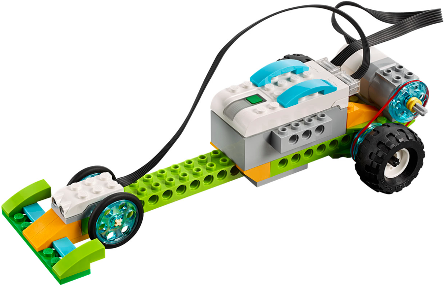

En este proyecto el alumno debe construir la base del los dos siguientes montajes. Debe hacer una serie
de retos iniciales para ver como se realiza el movimiento y como se traslada de un sitio a otro.
El primer montaje tiene las instrucciones para construir la parte de los engranajes. Este robot será la base
para los dos siguientes robots.
Los dos robots siguientes no tienen instrucciones y solo disponen de 3 fotos. Se construyen sobre la
base del montaje anterior.
Aprenderemos a utilizar las poleas simples y cómo, cambiando los engranajes de los dos extremos, podemos
hacer el movimiento más lento o más rápido.
El alumno debe aprender a calcular las diferentes velocidades necesarias para cumplir cada fase del proyecto.
• Hacer que el robot vaya de un extremo a otro de la mesa sin chocarse con los topes de la mesa.
• Hacer que el robot se vaya deteniendo a la altura de ciertos obstáculos antes de llegar al final de la
mesa.
• Repetir el ejercicio haciendo que espere una palmada para iniciar la marcha.

• Hacer que el coche de carreras vaya de un extremo a otro de la mesa sin chocarse con los topes de la
mesa.
• Repetir el ejercicio haciendo que espere a una señal al sensor de movimiento para iniciar la marcha.
• Hacer vaya a un extremo de la mesa y vuelva cuando detecte el tope con el sensor de movimiento.
• Hacer que el robot vaya de un extremo a otro de la mesa sin chocarse con los topes de la mesa.
• Hacer que el robot suba una rampa, dicha rampa debe ser creada por el profesor usando bloques de LEGO®.
• Repetir el ejercicio haciendo que salga cuando se le de una señal con la mano.
{kind=link}
{kind=link}